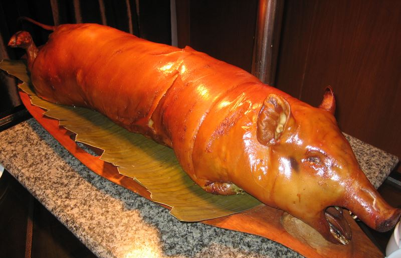

LECHON
Cagayan de Oro's version of the roasted pig is a must-try delicacy for meat-lovers. The skin is roasted to crispy perfection while the meat is juicy and flavorful. The aroma of the lechon is enough to entice anyone's taste buds, and it is often served as the centerpiece of festive occasions.